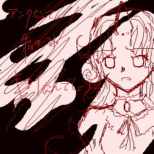
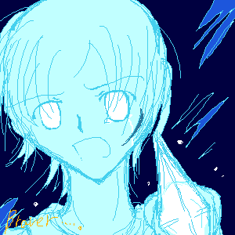
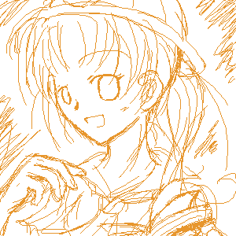
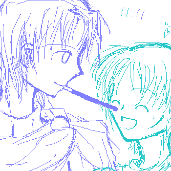
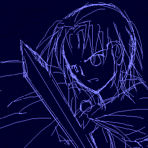
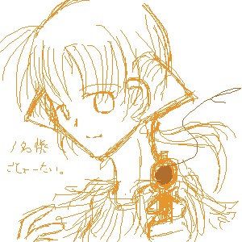
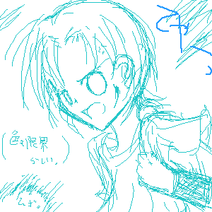
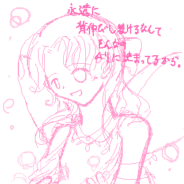
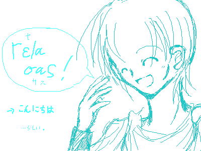
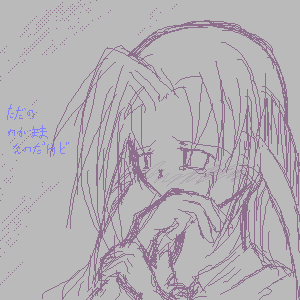

うちのゲルゲル子。裏常連になりそうな予感。

「お前なんかに 連れて行かせない！」
心境代理。クリスケが剣持つシーンなんて多分無いです（笑。

落書きの割にお気に入り。

貴方も私もポッキー！…ってことでポッキーゲーム。
この二人、万一ゴールしても絶対只の笑い事で終わりだ。つまらん…！（…）

動きのある絵が描きたくて。スランプでも妄想はノンストップ。

テラ姉はよっぽどの事が無ければ人を殺しません。
その代わりかなりの怪我と痛みの地獄へご招待してくれます。（ぎゃあ

色々吹っ切れたんじゃないですかね？（何があった

サボン子擬人化。ふわふわふわふわー。

ギリシャ語の勉強がしてみたくて。
ちなみに丁寧な“こんにちは”は「Χαιρετε」（ヘレーテ）らしいですよ。

泣き虫ルテ嬢。……心境代理に引きずり回してごめんよ。